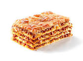

Lasagna Recipe

Description
This is a standard meat lasagna
Ingredients
- Lasagna noodles
- Shredded Mozzarella Cheese
- Tomato sauce
- Ground Beef
Steps
- Boil water and cook noodle
- Cook Beef
- Add tomato sauce to beef>
- Put down a layer of noodles
- Add tomato sauce with beef
- Ad shredded cheese
- Build more noodle layers until out of noodles